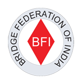
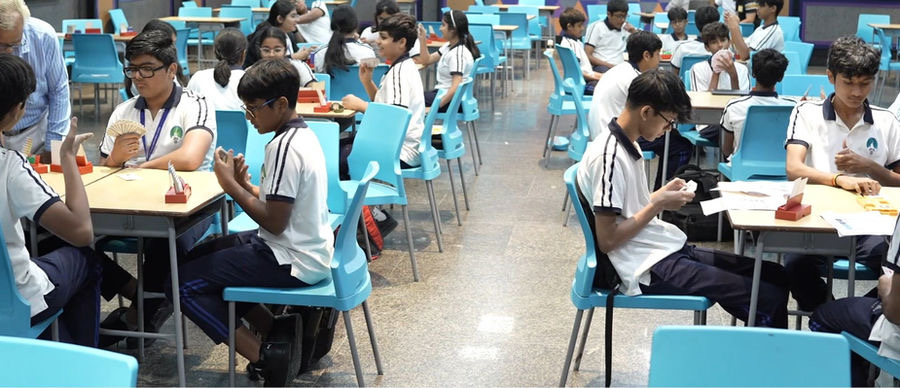
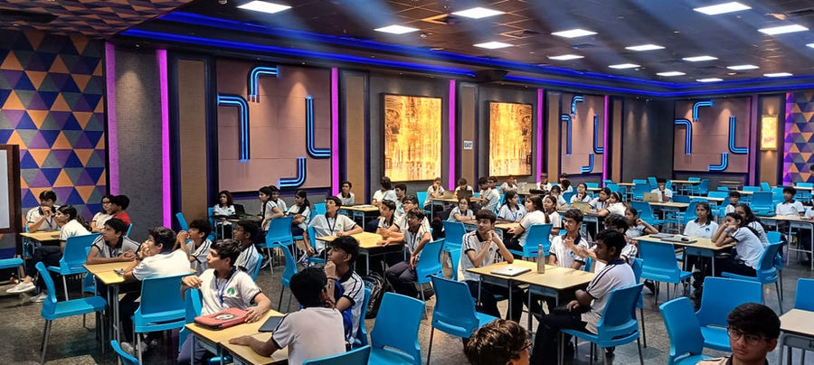
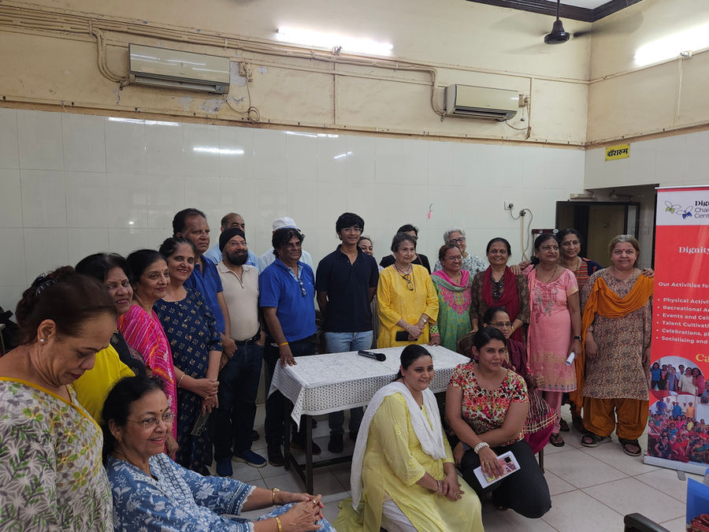
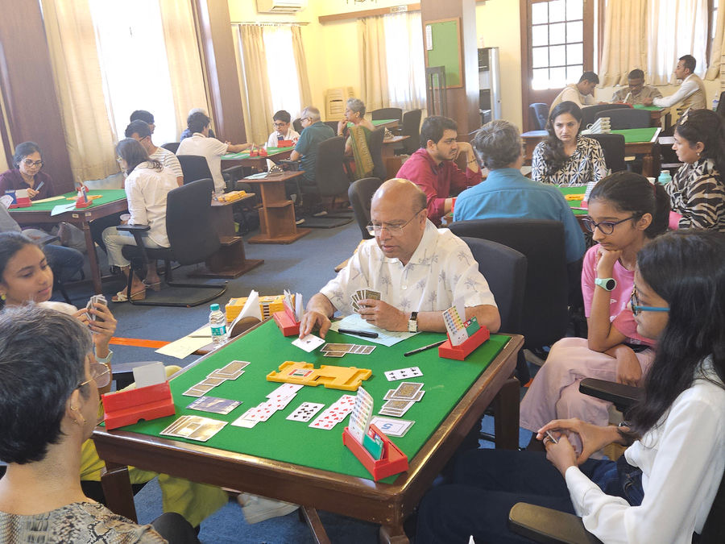

How It Started
Bridge ran in the family — both my grandparents were in the Indian Army, where the game was a staple, and my father had grown up around it (he was the substitute whenever they were short a player!). When I was in 8th grade, my father introduced me to bridge after hearing about an Indian teenager who became the youngest world champion. He told me about the game: my interest sparked and only grew from there.
My Bridge Portfolio — Institutions & Achievements

- Represented India, U-21, at the 9th World Youth Transnational ChampionshipsHefei, China · August 2026
- Represented India, U-21, at the World Youth Teams ChampionshipsSalsomaggiore, Italy · July 2025
- 2nd Indian pair in history to qualify for the Finals, U-16 Pairs, World Youth Transnational ChampionshipsWrocław, Poland · July 2024
- 2nd place, U-21 MP Pairs, Junior NationalsBridge Federation of India · December 2025
- 1st place U-21 MP Pairs, 3rd place U-21 IMP Pairs, 3rd place U-21 TeamsBridge Federation of India · May 2025
- Selected 4 times for the 20-player BFI World Championship Preparatory Coaching CampJune 2025 · December 2025 · February 2026 · July 2026
In the News
Indian Teens Qualify for Finals at 2024 World Youth Bridge Championships
How the pair of Viha Gahrotra and Gia Gupta reached the U-16 Pairs finals in Wrocław with Team BridgeBlitz.
DAIS MumbaiProud Moments at Wrocław
Dhirubhai Ambani International School celebrates Team BridgeBlitz at the World Youth Transnational Championships.
BridgeBlitz ↗
Bridge taught me how to think. As a mentor and instructor at BridgeBlitz, I’m making sure more students get that same chance.




♣ ♣ Bridge Club Bombay International School Est. 2024 · Mumbai B
♣
Bridge Club — Bombay International School
I founded the Bridge Club at BIS, where I applied the findings of my research paper ‘Bridge as a Model of Economic Behaviour’ in designing the pedagogy.
At the Table
Tournament photos
9th World Youth Transnational Championships
Hefei, China · August 2026
19th World Youth Team Championships
Salsomaggiore, Italy · July 2025